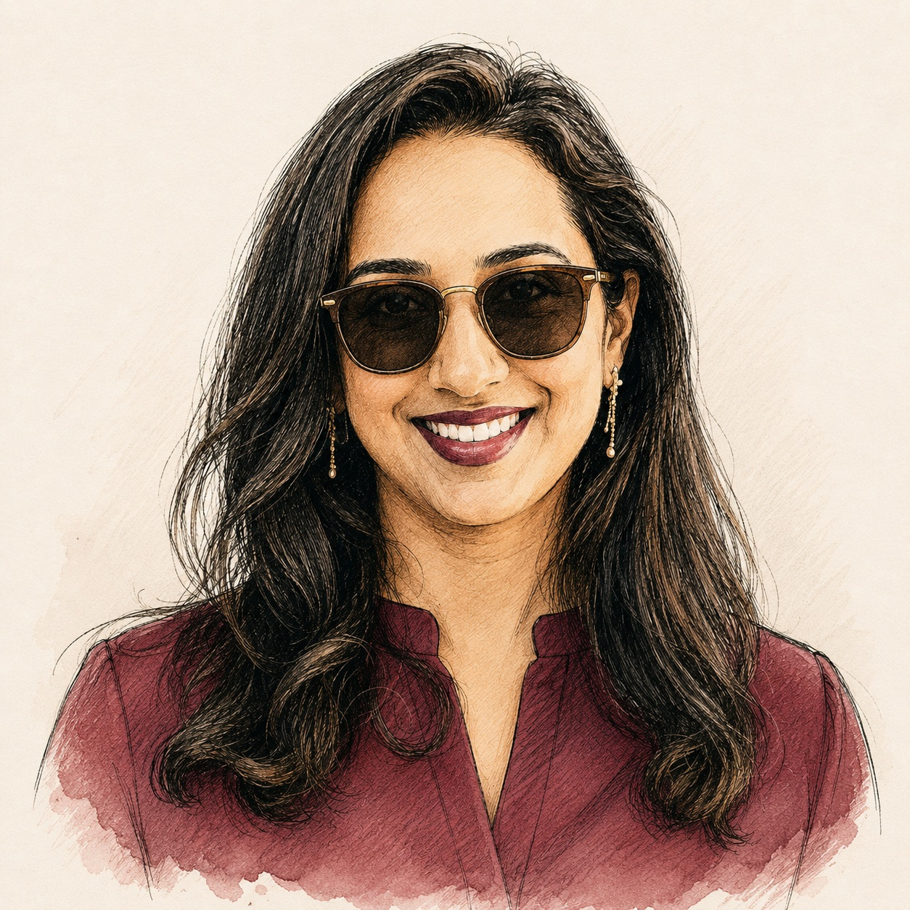

How I managed the audit process, coordinated cross-functional diligence preparation, and helped Chairish build the financial credibility required to close a $15M debt facility.
As Chairish grew, the company pursued a $15 million debt facility to support its next stage of expansion. Debt could provide additional capital without requiring an equity financing, but institutional lenders required a higher level of financial diligence than the company had previously experienced. Chairish needed to complete an audit and provide lenders with confidence that its financial statements, controls, and supporting records were reliable.
I was responsible for managing the audit process and helping prepare the company for the financing.
Like many early-stage companies, Chairish had built its financial infrastructure while simultaneously growing the business. The accounting records supported internal needs, but an external audit required a different level of documentation, consistency, and evidence.
The audit also had to be completed within the broader timeline of the debt raise. Any delay could have slowed the financing process at a time when the company was relying on access to capital to support its plans.
The audit was not simply an accounting requirement — it was part of establishing institutional credibility with a prospective lender. If the company could not produce reliable financial statements and supporting documentation, it risked delaying the $15 million financing, receiving less favorable terms, or revealing control issues late in the process when they would be hardest to address.
At the same time, the finance team still needed to manage its normal reporting, forecasting, payroll, payment, and operating responsibilities. My role was to create structure around the audit and keep the work moving toward the financing timeline.
I mapped the areas an external audit team and lender would be most likely to examine — revenue recognition, cash, accounts payable, accrued expenses, payroll, equity, tax obligations, marketplace transactions, cutoff procedures, significant contracts, and financial statement presentation — and used this to identify which schedules, reconciliations, and supporting documents would need to be prepared.
I reviewed the company's financial records to determine where additional support or cleanup might be required. The objective was to identify issues internally rather than allow them to emerge for the first time during lender diligence — finding accounts not fully reconciled, historical transactions with limited documentation, accounting policies not formally written, and inconsistencies between systems.
Chairish needed an audit firm that understood high-growth companies and could work within the financing timeline. I had previously worked in public accounting and understood both how audit teams operated and what made a company easier to audit. I leveraged relationships from my former employer to introduce the firm to Chairish and help evaluate whether it would be the right partner.
I created a project plan organized around the major audit areas, required documents, responsible owners, and due dates — tracking what the auditors needed, which internal person owned it, where the supporting data lived, whether the information required review, when it had to be delivered, and which open questions could affect the financing timeline.
I coordinated the preparation of account reconciliations, schedules, contracts, reports, and transaction support. Where records were incomplete or inconsistent, I worked with the relevant teams to reconstruct the necessary support and resolve discrepancies. I also reviewed materials before they were delivered to the auditors — because a poorly prepared response often led to additional questions, greater audit effort, and longer timelines.
Although finance owned the audit, the required information came from across the organization — legal, HR, operations, sales, engineering, executive leadership, and external tax and accounting providers. My role was to make each request understandable, set clear deadlines, and prevent the audit from becoming an unstructured interruption for the rest of the company.
As questions arose, I helped determine whether they represented a documentation gap, a process weakness, an accounting judgment, a potential adjustment, or a broader control issue. I coordinated discussions between management and the auditors, gathered the relevant facts, and helped ensure decisions were documented.
The audit was only one workstream within the debt raise. I kept the finance and leadership teams informed of progress, open issues, and potential timing risks so that the broader financing plan could be managed realistically — allowing leadership to distinguish between routine audit questions and issues that could affect the lender's decision or timeline.
Chairish completed the audit required to support the $15 million debt raise. The process gave the company and its prospective lender greater confidence in the financial statements and underlying records. Additional lasting benefits included:
The audit was not only a financing requirement — it helped Chairish build financial infrastructure appropriate for a more mature company.
A company becomes financeable before it enters a financing process. An audit can validate the financial statements, but it cannot instantly create clean records, clear accounting policies, or disciplined operating processes. Those capabilities must be developed over time.
Managing an audit requires both technical understanding and operational judgment. The finance leader must know which issues are material, which requests can be delegated, which questions require executive attention, and how to keep the process from distracting the entire company.
At an early-stage company, fundraising readiness is not simply the ability to produce an investor deck. It is the ability to support the story in that deck with reliable financial information.